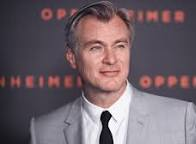

Christopher Nolan, (Londres, 30 de julho de 1970) é um diretor de cinema, roteirista e produtor britânico. Seus doze longas-metragens já arrecadaram o equivalente a mais de 6 bilhões de dólares em todo o mundo, fazendo do diretor um dos mais bem-sucedidos comercialmente da moderna Hollywood. O mesmo catálogo guarda 26 indicações da Academia de Artes e Ciências Cinematográficas (Óscar), com sete conquistas, além de indicações e vitórias em premiações como as da Associação de Imprensa Estrangeira de Hollywood (Globo de Ouro) e Academia Britânica de Artes do Cinema e Televisão (BAFTA).
Quentin Jerome Tarantino (Knoxville, 27 de março de 1963) é um realizador, roteirista, produtor, ator, diretor de fotografia e crítico de cinema americano. É vencedor de dois Oscars de Melhor Roteiro Original e foi eleito o 19° maior diretor de cinema dos últimos 25 anos segundo o levantamento da Quartz através do Metacritic. Alcançou a fama rapidamente no início da década de 1990 por seus roteiros não lineares, uso de violência gráfica, diálogos ricos e diversos, com uma mistura irônica de humor e violência. Ele é amplamente considerado um dos mais importantes cineastas de sua geração. Todavia, as obras de Tarantino também são controversas, como suas cenas de violência, sua inclusão frequente de insultos raciais e sua negligência no manuseio de cenas com dublês em Kill Bill: Volume 2.
Francis Ford Coppola (Detroit, 7 de Abril de 1939) é um produtor, roteirista e cineasta ítalo-norte-americano. Coppola é mais reconhecido internacionalmente por dirigir uma das mais aclamadas trilogias da história do cinema, The Godfather e clássicos como Apocalypse Now, The Conversation, Bram Stoker's Dracula, entre outros, e por escrever o roteiro do premiado Patton. É filho do compositor Carmine Coppola, e pai da cineasta Sofia Coppola, avô da também cineasta Gia Coppola, tio do ator Nicolas Cage e irmão da atriz Talia Shire. Já foi indicado 14 vezes ao Oscar e venceu por 5 vezes.